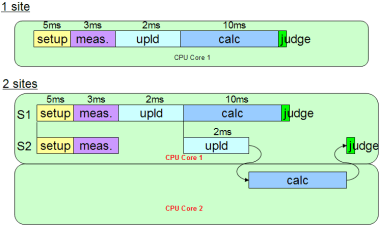

Parallel multisite calculation
SmartCalc provides parallel (multithreaded) calculation of multisite data on different CPU cores.
On multi core CPUs, extensive calculation may be passed on to another core and can therefore be performed in parallel to the current thread.
Note All test times shown are examples.

In the figure above, compared to the original structure in SmartCalc use models, the test time for calculations of a dual site test program will be divided by two, thus the multisite efficiency will improve from 40 % to 90 %, assuming a negligible overhead of SmartCalc and judge.
Typical RF tests with little captures and therefore fast upload times may allow a multisite efficiency of 95 %.
Functional changes
- Introduced in SmarTest 6.5.3